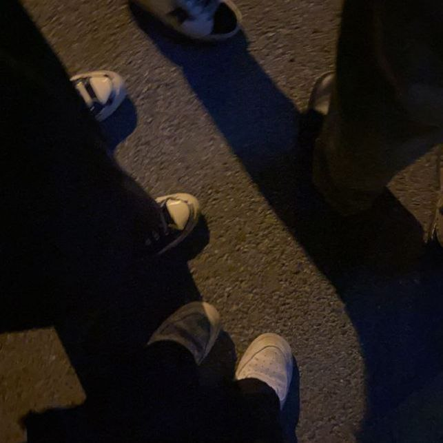
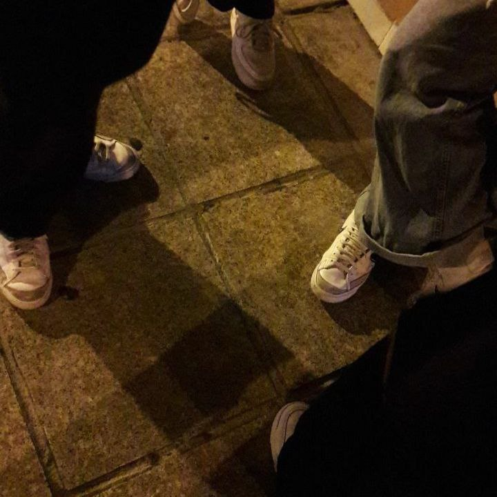
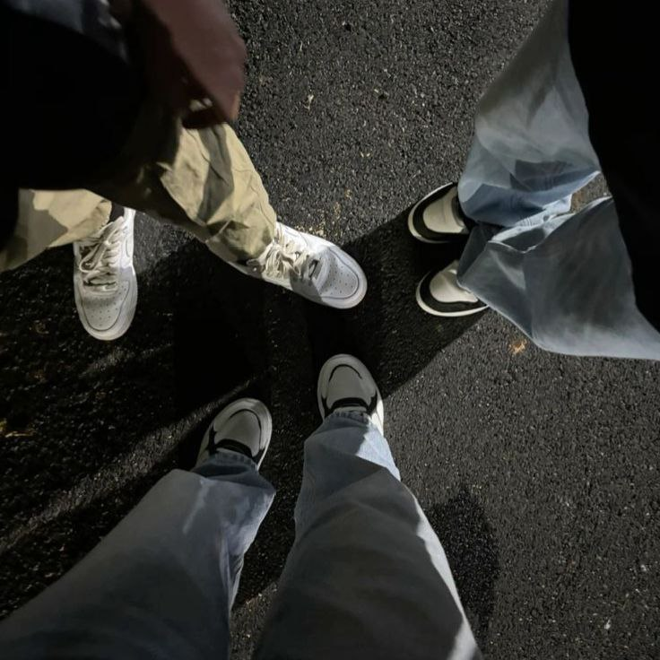

This is My Friends Page
This page is dedicated to the amazing people who brighten my life which is my friends whether close or not. They're the ones who share laughter, memories, are there when I’m struggling and give support through every moment. All of them are important in my life.
My Friends
Picupicu Friends
Picupicu friends are like my own family. Even though we rarely meet, we always support each other. We love to joke around, play games together and share interesting stories. We also often plan trips so we can meet up
Lepak Bila Free (LBF)
Just like our group name, we hang out whenever we are free because they are my close friends from secondary school. Now, all of us are studying in different universities like UNIKL, UiTM, UIA and others. During holidays, for example mid-semester break or Christmas break, we will plan to meet and hang out together
Trio Aneh
They're my friends from primary school. Actually, I had many more friends back then but since most of us didn’t have phones or contact numbers, we lost touch with many of them. Out of all the friends I had in primary school, these two are the ones who always stayed around and still keep in contact with each other
Komanderzz
Since I joined UiTM, I have joined a uniformed unit called Komander. There are many members and I don’t know everyone, especially the girls. However, in Komander, I still have many close male friends who always help me. Some of them are also my roommates and clubmates
Bowling TR Team
I met the three of them while representing bowling in the college games (CGames). They are all really good at bowling and share the same interest as me. I plan to play bowling with them again
Perkuruan
I'm the president of the department crew and I included them because this department is the most supportive in the cultural club. They are very approachable and easy to work with. They're also very creative in making props, handling technical lighting and doing makeup. I will take good care of my team
Unforgettable Memories
-
 We went to One Utama and visited District 21 and Game On. We were very happy and plan to go again. Our next plan is to visit a water theme park.
We went to One Utama and visited District 21 and Game On. We were very happy and plan to go again. Our next plan is to visit a water theme park. -

I used to be active in taekwondo. Every week, my friends and I would go to the gym to train and improve our skills as well as for grading. My friends and I have already achieved black belts in taekwondo.
-

Every time we meet, we open a table to hang out together. We play games, eat and share our stories when we meet. Sometimes, we set aside time to play badminton to get some exercise.
-

Every night, my friends and I play games together. For me, it’s really fun to spend time with them. We share stories, laugh together and sometimes talk about our problems. Everyone supports each other and gives advice to the person sharing.
Friendship Timeline
My first year, I met my friend from the Trio Aneh. We were classmates, so we became close in class
For Lepak Bila Free, I became close to them in Form 4 because we were classmates. We also studied together for the SPM exams.
This year I joined UiTM and this is where I met Komanderzz, Picupicu and Perkuruan. I tried to make many friends so that I wouldn’t feel lonely in a new place
This year, I met the TR bowling team when I was representing my college in the UiTM C-Games
True friendship isn’t about who you’ve known the longest but about who walks into your life and never leaves your side